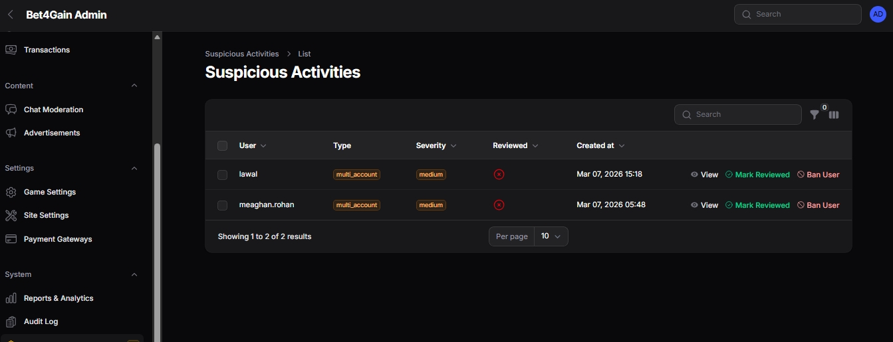

Security
Multi-layered security: authentication, rate limiting, anti-cheat, encryption, and responsible gaming.
Overview
Bet4Gain implements defence-in-depth security. All security
configuration lives in
config/security.php and can be tuned via
environment variables without code changes.
Authentication
- Laravel Fortify — Registration, login, email verification, password reset
- Laravel Sanctum — Session-based SPA authentication with CSRF protection
- Two-Factor Authentication — Optional TOTP 2FA with recovery codes
- Social Login — Google and GitHub via Laravel Socialite
- Guest Accounts — Limited demo accounts with restricted permissions (no deposits, no withdrawals, no transfers)
Rate Limiting
Every sensitive action is rate-limited to prevent abuse:
| Action | Max Requests | Window |
|---|---|---|
| Bet placement | 5 | 10 seconds |
| Cashout | 5 | 10 seconds |
| Chat message | 1 | 3 seconds |
| Deposit | 5 | 60 seconds |
| Withdrawal | 3 | 600 seconds |
| Registration | 3 | 600 seconds |
| API general | 120 | 60 seconds |
| Game state | 60 | 60 seconds |
| Webhook | 100 | 60 seconds |
RATE_LIMIT_* environment variables (see
Configuration).
Anti-Cheat System
The AntiCheatService automatically monitors
player behaviour and flags anomalies. Flagged activities are
stored in the suspicious_activities table for
admin review.
Detection Rules
| Rule | Threshold | Description |
|---|---|---|
| Multi-Account | 3 users per IP (30-day lookback) | Detects multiple accounts from the same IP address |
| Win Streak | > 15 consecutive wins | Unusually long unbroken win streaks |
| Rapid Withdrawal | > ₦500,000 in 30 minutes | High-value withdrawal bursts |
| Deposit Spike | > 10× average deposit | Abnormally large deposits compared to history |
| Bot Detection | < 200 ms between bets | Bet placement faster than humanly possible |
| Cashout Pattern | > 20 identical repeats | Repeated cashout at the exact same multiplier |

IP Restrictions
Admins can manage an IP blacklist and whitelist from the admin panel. Each entry supports:
- Individual IP addresses or CIDR ranges
- Reason / notes for the restriction
- Optional expiry date (auto-removal)
Security Headers
The SecurityHeaders middleware applies the
following headers to every response:
| Header | Value |
|---|---|
X-Frame-Options |
DENY |
X-Content-Type-Options |
nosniff |
X-XSS-Protection |
1; mode=block |
Referrer-Policy |
strict-origin-when-cross-origin |
Content-Security-Policy |
Configurable (see config/security.php) |
Strict-Transport-Security |
max-age=31536000; includeSubDomains (HSTS) |
Encryption
- Wallet balances — Encrypted at rest using Laravel's built-in encryption
- Server seeds — Encrypted before storage, revealed only after the round ends
- Passwords — Hashed with bcrypt (cost factor 12)
- CSRF protection — All state-changing requests validated via Sanctum
- Webhook signatures — Payment gateway webhooks verified using HMAC signatures
Audit Logging
Every admin action is logged to the
audit_logs table. Each entry records:
- The admin user who performed the action
- The action type (create, update, delete)
- The affected model and record ID
- Old and new values (JSON diff)
- The admin's IP address
- Timestamp
Audit logs are viewable from the Audit Log resource in the admin panel.
Login Tracking
Every login attempt (successful or failed) is logged to the
login_logs table with:
- Email used in the attempt
- IP address
- User-agent string
- Success / failure status
This data feeds into the anti-cheat system for pattern analysis and is viewable by admins.
Responsible Gaming
All responsible gaming controls are enforced server-side and cannot be bypassed from the client.
| Feature | Description |
|---|---|
| Self-Exclusion | Player can exclude themselves for 1–365 days. Cannot be reversed before the period ends. |
| Deposit Limits | Daily, weekly, and monthly caps on deposit amounts. |
| Bet Limit | Maximum amount per single bet, enforced in the game engine. |
| Cooldown Timer | Temporary break from 15 minutes to 24 hours. |
| Session Reminders | Periodic alerts after extended play sessions. |
Best Practices
-
Always set
APP_DEBUG=falsein production - Use HTTPS with a valid SSL certificate
- Use Redis for sessions (prevents session fixation via file system)
-
Set strong, unique values for
APP_KEY,REVERB_APP_SECRET - Restrict database access to only the application server's IP
- Regularly review the audit log and suspicious activity reports
-
Keep dependencies updated:
composer update&npm update